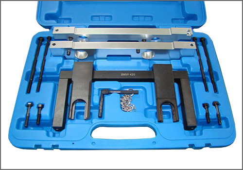
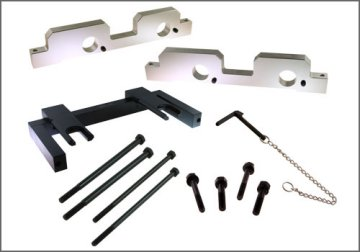
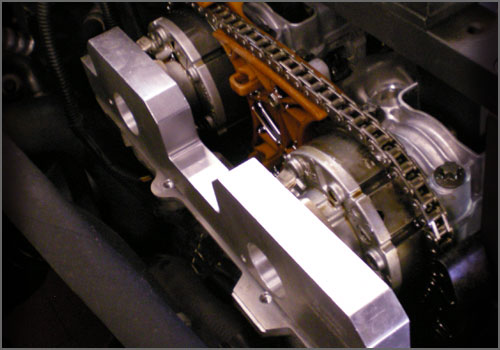

BMW N52/N54 Camshaft Alignment Tool Set - AST Tool # BMW 3028
BMW N52/N54 Camshaft Alignment Tool Set
AST tool# BMW 3028



Camshaft Alignment Tools applicable to Newer BMW (N52) 3.0L (Non-Turbo) and (N54) 3.0L (Twin Turbo only).
- Includes carrying case
- Covers 2006 and Newer 1, 3 and 5 Series Models with 3.0L (Non-Turbo) and 3.0L Twin Turbo engines.
Contact AST for pricing.
Assenmacher Specialty Tools
1-800-525-2943